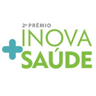
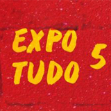
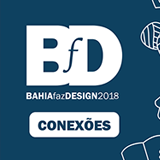

|  | Prêmio Inova + Saúde, Instituto Federal de Educação, Ciência e Tecnologia, UNEB, Senai CIMATEC e BAHIANA - 2017 |
| Foi pensado e entregue por meio do BMC – Business Model Canvas um game simulador que possui as seguintes funções e objetivos: acesso à informação, formação em primeiros socorros, segurança pessoal e das crianças e adolescentes dentro do ambiente escolar. Qualquer pessoa pode jogar, entretanto, seu público-alvo é profissionais e gestores de educação que lidam com a segurança dos estudantes de várias idades dentro do ambiente escolar. Integrantes: Drª Suiane Costa (Educadora, Enfermeira, Doutora em tecnologias digitais no ensino presencial), Adilton Santana (Designer), Beatriz Ramos (Game designer) Gabrielle Fontoura (Designer) e Rafael Bacellar (Designer gráfico e Game designer). | |
|  | V EXPOTUDO - SEM VOCÊ MEU AMOR, EU NÃO SOU NINGUÉM, Artes Visuais - 2017 |
| Uma grande exposição que reúne, nos diversos espaços do Campus I da UNEB, no Cabula, ações culturais, acadêmicas e artísticas realizadas pelos estudantes, professores e técnicos dos diversos campis da instituição e também da comunidade de seu entorno. BARBOSA, Adilton. S.; MOTA, Maria. V. . Rafael Braga. 2018. Ilustração. BARBOSA, Adilton. S.; Justiça de xangô sobre Rafael Braga. MARTE SSA. 2018. Ilustração. |
|
|  | Desafio BfD2018 - "Vamos Brincar?" - Bahia Faz Design, Senai CIMATEC, UNEB, UFBA e Coletivo de Design da Bahia - 2018 |
| Foi pensado um equipamento urbano lúdico batizado de REBRIK, composto principalmente por madeira e materiais orgânicos poliméricos sintéticos, entre outros, para crianças de 3 a 11 anos, com a função de diversão e aprendizado (passivo) sobre a separação de lixo através do processo de reconhecimento visual de pequenos objetos não constrangedores para as crianças, a ser projetado e instalado no parque da cidade Joventino Silva ou qualquer outro espaço de recreação. Integrantes da proposta: Adilton Santana (Designer), Lorena Nunes (Arquiteta) e Marcos Vinicius “Reiv” (designer gráfico, graffiteiro). |